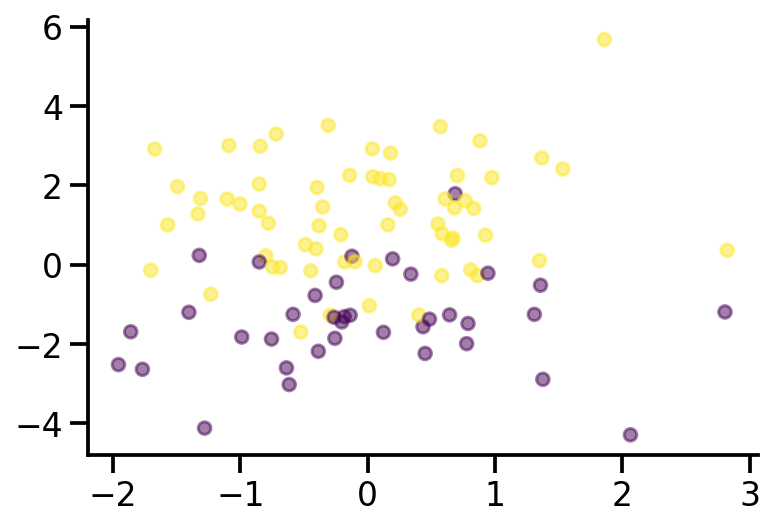
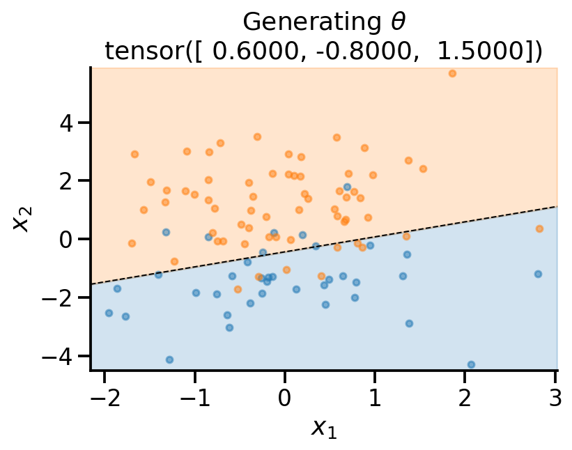
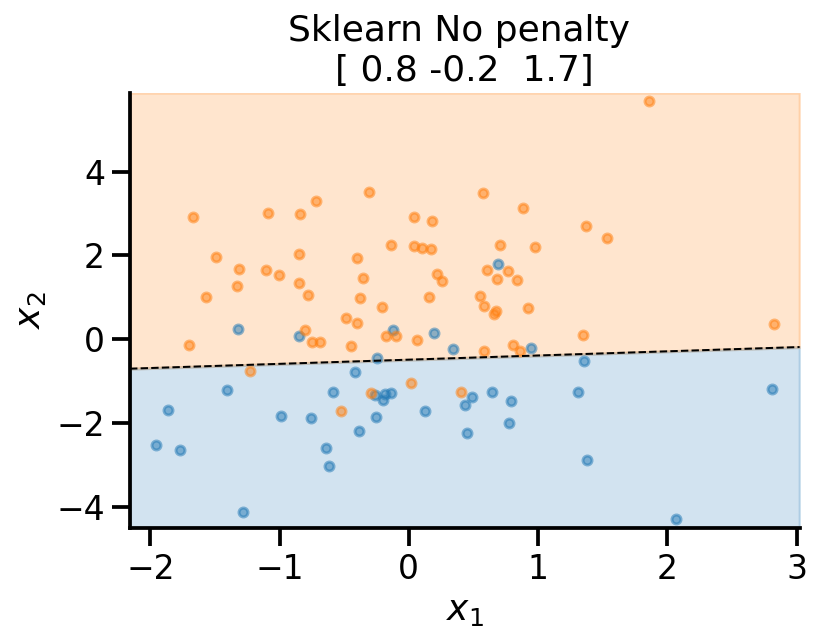
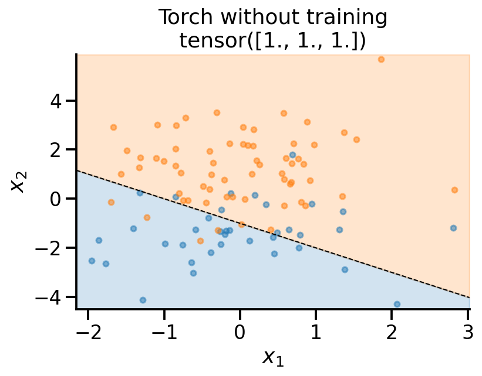
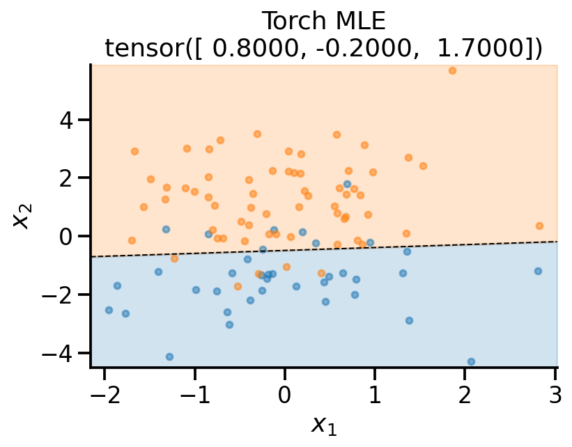
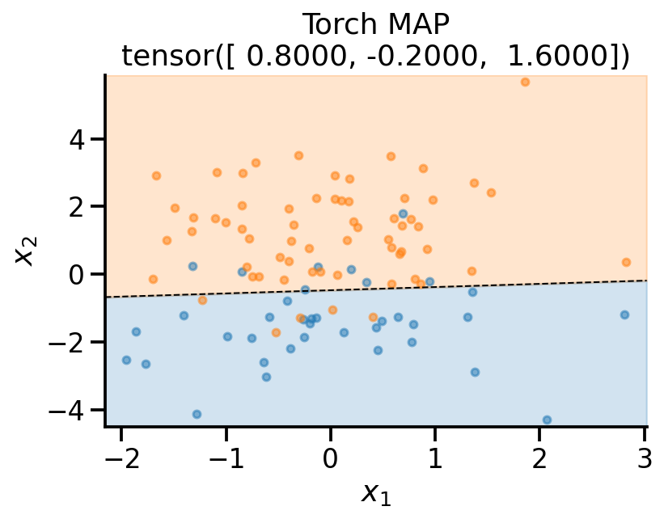

import numpy as np
import matplotlib.pyplot as plt
import torch
import seaborn as sns
import pandas as pd
dist =torch.distributions
sns.reset_defaults()
sns.set_context(context="talk", font_scale=1)
%matplotlib inline
%config InlineBackend.figure_format='retina'Basic Imports
Generative model for logistic regression
x = dist.Normal(loc = torch.tensor([0., 0.]), scale=torch.tensor([1., 2.]))
x_sample = x.sample([100])
x_sample.shape
x_dash = torch.concat((torch.ones(x_sample.shape[0], 1), x_sample), axis=1)theta = dist.MultivariateNormal(loc = torch.tensor([0., 0., 0.]), covariance_matrix=0.5*torch.eye(3))
theta_sample = theta.sample()
p = torch.sigmoid(x_dash@theta_sample)
y = dist.Bernoulli(probs=p)
y_sample = y.sample()plt.scatter(x_sample[:, 0], x_sample[:, 1], c = y_sample, s=40, alpha=0.5)
sns.despine()
theta_sampletensor([ 0.6368, -0.7526, 1.4652])from sklearn.linear_model import LogisticRegression
lr_l2 = LogisticRegression()
lr_none = LogisticRegression(penalty='none')lr_l2.fit(x_sample, y_sample)
lr_none.fit(x_sample, y_sample)LogisticRegression(penalty='none')def plot_fit(x_sample, y_sample, theta, model_name):
# Retrieve the model parameters.
b = theta[0]
w1, w2 = theta[1], theta[2]
# Calculate the intercept and gradient of the decision boundary.
c = -b/w2
m = -w1/w2
# Plot the data and the classification with the decision boundary.
xmin, xmax = x_sample[:, 0].min()-0.2, x_sample[:, 0].max()+0.2
ymin, ymax = x_sample[:, 1].min()-0.2, x_sample[:, 1].max()+0.2
xd = np.array([xmin, xmax])
yd = m*xd + c
plt.plot(xd, yd, 'k', lw=1, ls='--')
plt.fill_between(xd, yd, ymin, color='tab:blue', alpha=0.2)
plt.fill_between(xd, yd, ymax, color='tab:orange', alpha=0.2)
plt.scatter(*x_sample[y_sample==0].T, s=20, alpha=0.5)
plt.scatter(*x_sample[y_sample==1].T, s=20, alpha=0.5)
plt.xlim(xmin, xmax)
plt.ylim(ymin, ymax)
plt.ylabel(r'$x_2$')
plt.xlabel(r'$x_1$')
theta_print = np.round(theta, 1)
plt.title(f"{model_name}\n{theta_print}")
sns.despine()plot_fit(
x_sample,
y_sample,
theta_sample,
r"Generating $\theta$",
)
plot_fit(
x_sample,
y_sample,
np.concatenate((lr_l2.intercept_.reshape(-1, 1), lr_l2.coef_), axis=1).flatten(),
r"Sklearn $\ell_2$ penalty ",
)plot_fit(
x_sample,
y_sample,
np.concatenate((lr_none.intercept_.reshape(-1, 1), lr_none.coef_), axis=1).flatten(),
r"Sklearn No penalty ",
)
MLE estimate PyTorch
def neg_log_likelihood(theta, x, y):
x_dash = torch.concat((torch.ones(x.shape[0], 1), x), axis=1)
p = torch.sigmoid(x_dash@theta)
y_dist = dist.Bernoulli(probs=p)
return -torch.sum(y_dist.log_prob(y))neg_log_likelihood(theta_sample, x_sample, y_sample)tensor(33.1907)theta_learn_loc = torch.tensor([1., 1., 1.], requires_grad=True)
neg_log_likelihood(theta_learn_loc, x_sample, y_sample)
plot_fit(
x_sample,
y_sample,
theta_learn_loc.detach(),
r"Torch without training",
)
theta_learn_loc = torch.tensor([0., 0., 0.], requires_grad=True)
loss_array = []
loc_array = []
opt = torch.optim.Adam([theta_learn_loc], lr=0.05)
for i in range(101):
loss_val = neg_log_likelihood(theta_learn_loc, x_sample, y_sample)
loss_val.backward()
loc_array.append(theta_learn_loc)
loss_array.append(loss_val.item())
if i % 10 == 0:
print(
f"Iteration: {i}, Loss: {loss_val.item():0.2f}"
)
opt.step()
opt.zero_grad()Iteration: 0, Loss: 69.31
Iteration: 10, Loss: 44.14
Iteration: 20, Loss: 35.79
Iteration: 30, Loss: 32.73
Iteration: 40, Loss: 31.67
Iteration: 50, Loss: 31.25
Iteration: 60, Loss: 31.08
Iteration: 70, Loss: 31.00
Iteration: 80, Loss: 30.97
Iteration: 90, Loss: 30.95
Iteration: 100, Loss: 30.94plot_fit(
x_sample,
y_sample,
theta_learn_loc.detach(),
r"Torch MLE",
)
MAP estimate PyTorch
prior_theta = dist.MultivariateNormal(loc = torch.tensor([0., 0., 0.]), covariance_matrix=2*torch.eye(3))
logprob = lambda theta: -prior_theta.log_prob(theta)theta_learn_loc = torch.tensor([0., 0., 0.], requires_grad=True)
loss_array = []
loc_array = []
opt = torch.optim.Adam([theta_learn_loc], lr=0.05)
for i in range(101):
loss_val = neg_log_likelihood(theta_learn_loc, x_sample, y_sample) + logprob(theta_learn_loc)
loss_val.backward()
loc_array.append(theta_learn_loc)
loss_array.append(loss_val.item())
if i % 10 == 0:
print(
f"Iteration: {i}, Loss: {loss_val.item():0.2f}"
)
opt.step()
opt.zero_grad()Iteration: 0, Loss: 73.11
Iteration: 10, Loss: 48.06
Iteration: 20, Loss: 39.89
Iteration: 30, Loss: 37.01
Iteration: 40, Loss: 36.10
Iteration: 50, Loss: 35.78
Iteration: 60, Loss: 35.67
Iteration: 70, Loss: 35.64
Iteration: 80, Loss: 35.62
Iteration: 90, Loss: 35.62
Iteration: 100, Loss: 35.62plot_fit(
x_sample,
y_sample,
theta_learn_loc.detach(),
r"Torch MAP",
)
References
- Plotting code borrwed from here: https://scipython.com/blog/plotting-the-decision-boundary-of-a-logistic-regression-model/